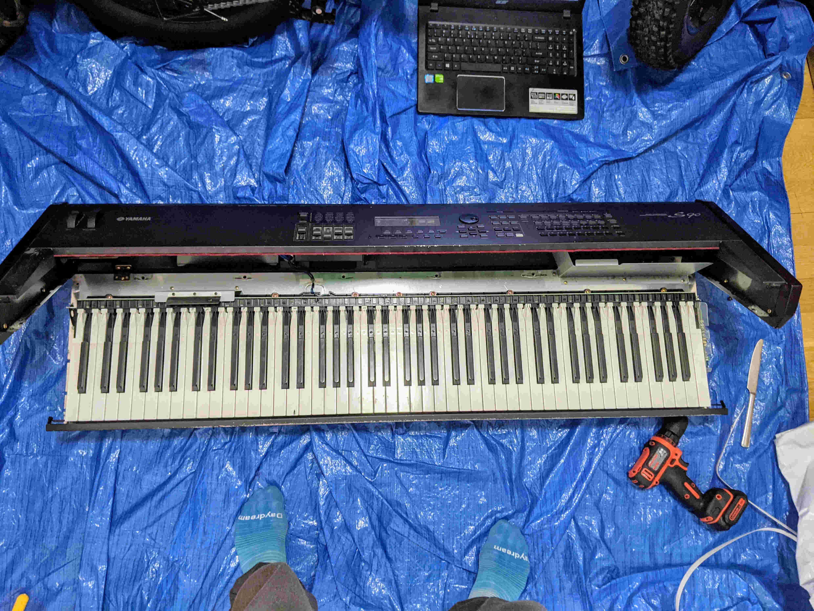

Place the keyboard on a flat surface such as a table or floor. Tilt the keyboard 90 degrees upwards so that the keybed is facing up into the air. Attach the bit to the drill and remove the 2 screws on the front face of the keybed plate and the 9 screws on the underside of the plate. You can now lift and shimmy the plate out to expose the base of the keybed. Set the plate aside.
Flip the keyboard over so that the base is facing up. Remove all of the screws with rounded heads that look like they have washers attached to them (sometimes called "nipple" or "monk" head screws). While holding the keyboard body, gently flip the keyboard back over onto its base.
Having unscrewed the base, you can now open the keyboard body on its hinge. If necessary, you can get some leverage by pressing your fingers into the vertical face of the lip of the body near the ends of the keys and lifting up.
Locate the key you wish to replace. There will be an arrow near the top of the narrow part of the key indicating the side on which its retention lever is located. Slide the wedge between the keys next to this lever and press down gently. Simultaneously, place your finger on the exposed end of the key and pull it towards you to pop the key out of place.
Take the new key in hand and check to see if it has a black rubber pad on the protruding piece underneath the base of the key where it is typically played. If it is missing, you'll have to take the pad from the old key and transfer it to the new one. You can use the wedge or flat head screwdriver (as I did) to gently pry up the pad and push it out of the retention slot. It can then be inserted into the new key by hand.
Now that the new key is ready, place it into the vacant space in the keybed with the key pointing up at an angle. Place your finger on the base of the key, press down gently, and slide your finger up the key to pop it into place.
Once you are done replacing keys, close the keyboard body.
Flip the keyboard upside-down and drill its screws back into place.
Slide the front keybed plate back into place and drill its screws back into place.